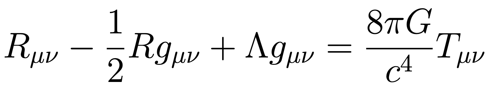

I have worked on a variety of research and have completed projects in a wide range of topics, which have developed my strengths in physics, math, data analysis. I detail my technical and transferable strenths in my Skills Inventory.
I have a more thorough list of these experiences in my Research and Projects tabs, but below is a collection of experiences that have been especially influential. In each of these, I provide a more detailed description of my work and, more importantly, provide a reflection on how each have shaped my development.
Reflection on My Gravitational Waves Research

In each year during my undergraduate, I engaged in gravitational wave research. This reflection focuses on my work with Dr. Quashnock's group at Carthage College.
Read this reflection
Reflection on Independently Learning GR

Just as the fall semester of my junior year was beginning, I started independently learning general relativity. This is a reflection on that process.
Read this reflection
Reflection on Penn State REU

During the summer between my junior and senior year, I participated in Penn State's physics REU, mentored by Dr. Sarah Shandera. This reflection covers my experience and work.
Read this reflection
Reflection on Math Senior Thesis

For my senior thesis in mathematics, I wrote a modified theory of gravity called Scalar-Tensor-Vector Gravity in the ADM Formalism. This work developed my proficiency in differential geometry and mathematical relativity.
Read this reflection